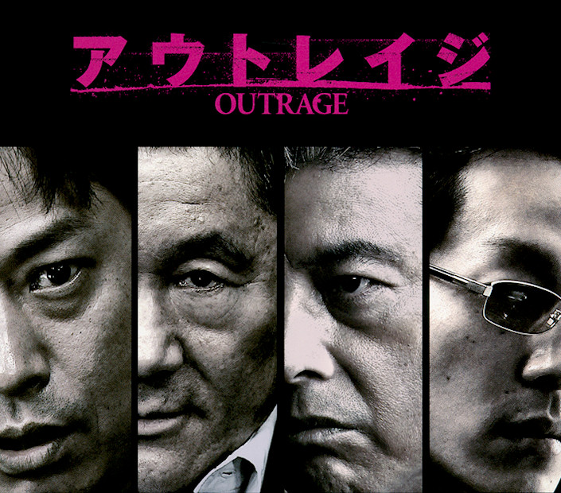

Egész 2010-ben vártam erre a filmre. Decemberben végre sikerült megkaparintanom Kitano új filmjének, az Outrage-nek a DVD változatát. Az ünnepek alatt nem volt szinte egy nyugodt percem sem, ezért úgy határoztam, hagyom a polcon heverni a DVD-t, amíg nem lesz egy olyan estém, amit ennek szentelhetek. Végül a múlt héten egyik este sötétben, egyedül leültem, megnéztem.
Félig-meddig csalódottan, másrészt viszont egy baromi jó filmélménnyel gazdagodva álltam fel a stáblista végén. Nehéz megfogalmaznom, részben miért nem felelt meg várakozásaimnak, de azért megpróbálok majd erre is kitérni.

Ez egy jakuza film, de mégsem olyan, mint a Sonatine, vagy a Brother. Mondhatjuk, hogy Kitano „visszatért a gyökereihez”, de ez túl elcsépelt, és azt hiszem nála szó sincs erről, mert minden filmje más, mint az előzőek, találni bennük újat, egyáltalán nem egy kaptafára készülnek.
Nincsenek jófiúk. Nem találtam igazi főhőst, sem olyan igazi antihőst, aki köré építették volna a történetet. Inkább azt láttam, hogyan működik a jakuza: ki-kivel üzletel, ki-kinek az alárendeltje, testvére, főnöke.
Az egyéni érdekek a korábbi íratlan szabályokat felülírva mindent fenekestül felforgatnak, az üzleten kívül más nem számít, minden más – beleértve az emberi életet is – másodlagos. Az egyes jakuzacsoportok egymás ellen való kijátszásának olyan kifinomult, művészi módjával találkozunk ebben a filmben, ami a végtelen hatékonyságával már-már félelmetes. Ez a „játék” csak a piramis csúcsán levőknek élvezetes, a többiek, a bábok – anélkül, hogy igazán tudnának erről – viszik vásárra a bőrüket.
Furcsa, de tetszik ez a kitekert, beteg játék.
https://www.youtube.com/watch?v=ZrGnJm6qASY
A Kitanotól megszokott minimalista ábrázolásmód teljesen hitelessé teszi a sztorit. Nincsenek pörgőrúgások, vetődés közben kilőtt pisztolytárak, meg semmi ilyesmi. Azt hiszem azért voltam kissé csalódott, mert több erőszakot vártam. Vagyis az erőszak hatásvadászibb módozatait szerettem volna látni, de visszatekintve így is több durvaság volt a filmben, mint ami kellett volna. Az indulatok, lövöldözések, robbantások és a gyilkosságok szenvtelen bemutatásának köszönhetően sokkal jobban átérezni azt a brutalitást, amit említettem.
Ami viszont Kitanora egyáltalán nem jellemző, hogy az IMDb, és a DVD szerint idén érkezik a folytatás. Az egyelőre kérdés, hogy ugyanezt a szálat viszi majd tovább, vagy valami másba fogunk bekapcsolódni.
Felejthetetlen. Bevallom, rajongó vagyok.